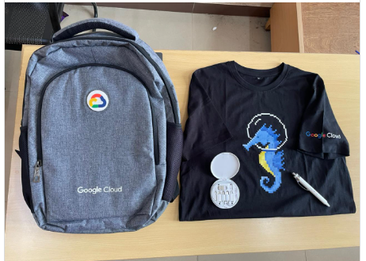

Career Objective
I am a passionate engineering student with a strong academic background and practical experience in software development. My key projects include a departmental blog application and a shape detection app utilizing Unity Hub and C#. I thrive in collaborative settings and have actively participated in tech events, enhancing my skills and expanding my network.
Education
- GSSSIETW, Mysuru – B.E. CSE (AI&ML), 2022–2026 | CGPA: 9.07
- MHNGPU College, Sirsi – PUC, 2020–2022 | 96.66%
- SVHS Goli, Sirsi – SSLC, 2020 | 98.88%
Skills
- Programming Languages: C, C++, Python, C#
- Web Development: HTML, CSS, JavaScript
- Software & Tools: Unity, GCP, Git, VS Code, Tableau, Power BI
- AI & ML: OpenCV (basic)
- Databases: MySQL, MongoDB
- Version Control: GitHub, GitLab
Internships
AI & ML Intern – Newrokaaya Innovative Solutions, Bengaluru
Aug 14, 2024 – Nov 14, 2024
Worked on neuroscience applications. Learned Unity Hub and C# to build a shape detection application.
Projects
- Department Blog – ACHARYA: A blog web application for internal communication, achievements sharing, and Q&A between staff and students.
- Shape Detection App: Unity-based app to recognize hand-drawn shapes, calculate accuracy, and track drawing time.
Achievements
- Coordinator – Google Cloud Student Club
- Received swags from Google for completing the Arcade program
- Student Member – Anti-ragging Committee (Institutional), GSSSIETW
- Coordinator – Hackcelerate 24-hour Hackathon, Dept. of CSE (AI & ML)
- Copyright: Department Blog – ACHARYA (Diary No: 3285/2025-CO/SW)

Participation
- CodeHunt2K24: Vidyavardhaka College of Engineering, Mysuru
- NeuroTechCon 2024: First international conference (Doctors & Engineers), NIMHANS Convention Centre
- AWS Generative AI Ideathon: Organized by Aspire for Her & AWS at GSSSIETW
Interests
🎨 Drawing, 🧵 Stitching
🚀 25 Days Coding Challenge
I challenged myself to solve 1 coding problem every day for 25 days — focused on algorithms, data structures, and clean code.
These problems were solved on platforms like LeetCode, GFG, and HackerRank.
🧠
Using List Generate the Tables from 1 to 10.
table=[]
for i in range(1,11):
for j in range(1,11):
table=table+[i*j]
print(table)
💡 I also enjoy building reusable code. In fact, I created my own custom Python module for geometry calculations.
Want to see how I structured it? Check out the sample below!
View Full Repository on GitHub
>